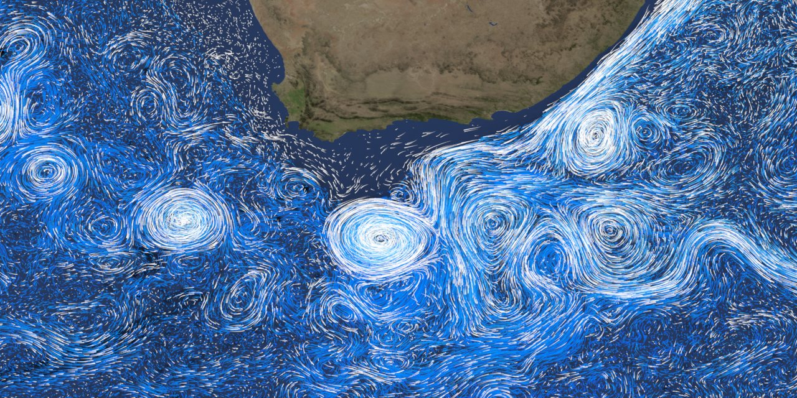

Los ríos invisibles del océano
El mar no está quieto. En su superficie corren verdaderos ríos, y en sus profundidades se arrastra otro sistema, mucho más lento, que puede tardar mil años en completar una vuelta. Dos motores distintos los impulsan: arriba, el viento; abajo, pequeñas diferencias de densidad entre el agua fría y la salada.
El viento impulsa las corrientes en los 100 metros superiores del océano [1]. En mar abierto, esas corrientes superficiales dependen de un sistema global de vientos, y para entenderlas hace falta el efecto de Coriolis y la espiral de Ekman [2]. Por la rotación de la Tierra, lo que se mueve se desvía hacia la derecha en el hemisferio norte y hacia la izquierda en el sur [2], y por eso el agua no sigue exactamente al viento. Eso se cuenta en la espiral de Ekman.
La Corriente del Golfo, una de las más conocidas, tiene una velocidad media de 6,4 km/h [3], unos 1,8 m/s (un cálculo propio). Parece poco, pero el agua es unas 800 veces más densa que el aire (un comentario propio).

Dos pisos: pensá el océano como un edificio. En el piso de arriba, el viento empuja a todos: es rápido y ruidoso. En el subsuelo, casi nada se mueve, salvo una fila larguísima que avanza despacio porque desde afuera entra gente que pesa más.
Las corrientes también fluyen a miles de metros de profundidad, y ahí el viento no llega. Esas corrientes profundas dependen de la densidad del agua, que está controlada por la temperatura (thermo) y la salinidad (haline): de ahí el nombre de circulación termohalina [1].
El proceso empieza en las regiones polares. El agua se enfría mucho y se forma hielo marino. Como el hielo deja la sal afuera, el agua de alrededor queda más salada y más densa, y se hunde [1]. El agua de la superficie entra a reemplazarla, se enfría y se sala a su vez, y así arranca la circulación profunda [1]. Es la misma física de la flotación, con una diferencia de densidad muy chica actuando sobre una masa enorme.
El agua fría y densa se hunde en el extremo norte y viaja hacia el sur a lo largo del Atlántico occidental, y la corriente se «recarga» al pasar por la Antártida, donde recoge más agua fría, salada y densa [4]. La vuelta completa no es rápida: se estima que una porción de agua puede tardar 1000 años en recorrer la cinta transportadora global [4].
Medir el océano: la circulación de vuelco del Atlántico se mide en sverdrups: 1 Sv es un millón de metros cúbicos por segundo [5]. Desde 2004 hay una línea de instrumentos fondeados a lo ancho del Atlántico, y entre abril de 2004 y febrero de 2017 midió un transporte medio de 17,0 ± 4,4 Sv [5]. Tiene una gran variabilidad: hubo una caída de alrededor del 30 % en 2009 y 2010, y desde aproximadamente abril de 2008 predominan valores más bajos [5]. Un registro de pocos años no alcanza para separar una tendencia climática de una variación natural (un comentario propio).
El océano tiene dos motores: el viento mueve la capa superior, y la densidad, gobernada por la temperatura y la sal, mueve las profundidades. Los dos se conectan en una circulación global que puede tardar un milenio en dar una vuelta. Es uno de los sistemas de fluidos más grandes del planeta, y recién desde hace unas décadas se lo mide de manera continua.
Pregunta para la comunidad: Si el agua dulce del deshielo se agregara al Atlántico norte, ¿qué le pasaría a la densidad del agua de superficie? ¿Qué parte de la cadena descripta acá se vería afectada primero?